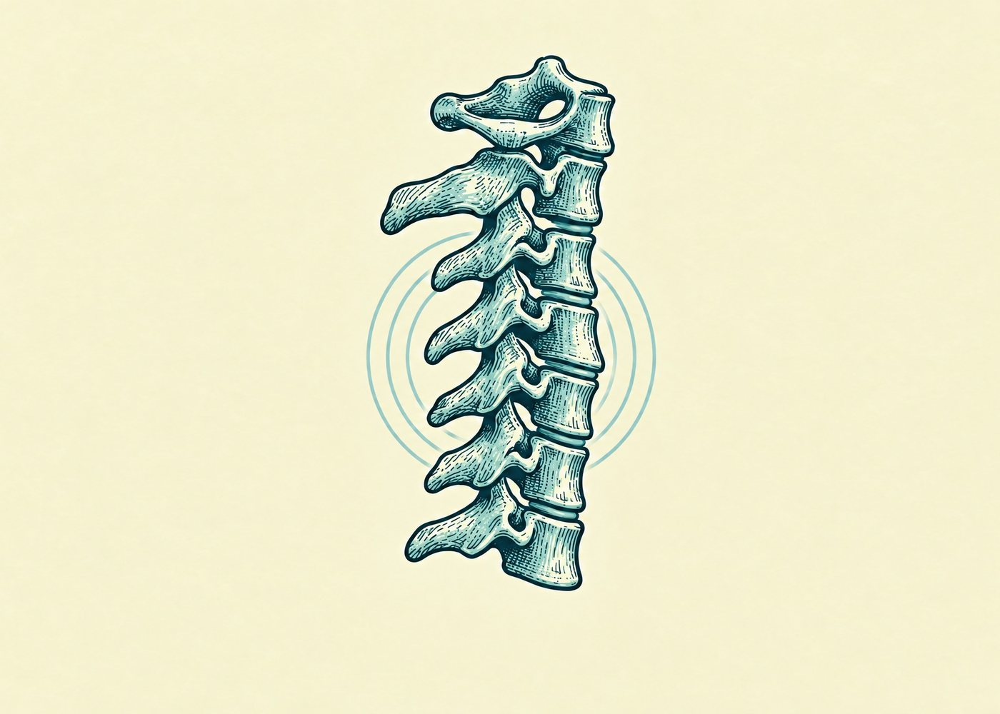
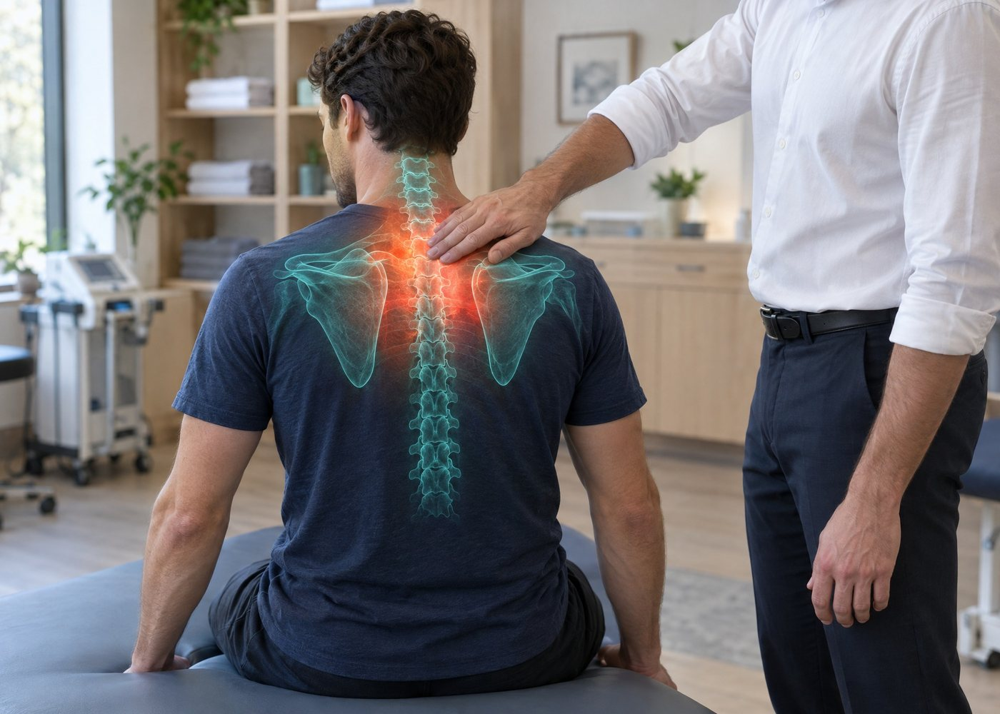
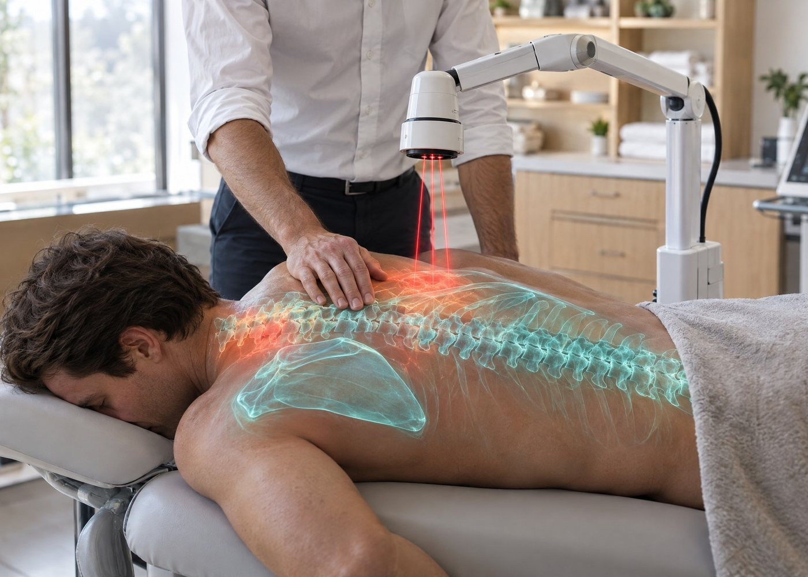
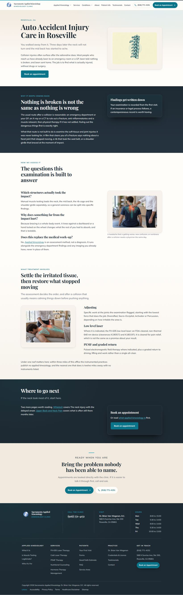

Auto Accident Injury Care in Roseville
/conditions/auto-accident-injury/
Minor notes · Round 3 · independent review
Review notes (2)
- C1 atlas is drawn with a body-like anterior block and a disc band beneath it; the real atlas has no body and there is no C1-C2 disc. Counted as C1 because the spec wording (atlas + six bodies C2-C7) matches this drawing. Identical in both edits and in the source.
- Lordosis is weak and reads nearly straight, tilted forward at the top. Anterior body edges (x, mid-height): C2 0.592, C3 0.584, C4 0.590, C5 0.584, C6 0.576, C7 0.5725. C4-C5 sit only ~0.005 (about 10-12 px) in front of the C2-C7 chord (sagitta ~1.4% of a ~708 px span, about 6-7 degrees of arc), and C3 sits slightly behind it. Technically bows toward the body side, as the spec asks, but weakly.
cond-auto-hero.jpg
Minor notes · Round 3 · independent review · 4 hands checked, all correct
Review notes (2)
- The spine continues below the shoulder blades, down to about y 0.73 (the full thoracic column); the brief said 'nothing below the shoulder blades'. It stays in the midline and stops higher than in variant a.
- The shoulder blades and small humeral heads sit slightly inside the real shoulder tips (the left by about 0.03). Stylised, not gross.
cond-auto-assess.jpg
Minor notes · Round 1 · independent review · 2 hands checked, all correct
Review notes (2)
- Only the near (left) scapula is drawn; the far (right) scapula under the practitioner's hand is not depicted although 'the shoulder blades' was requested.
- Tiny illegible pseudo-text glyphs on the side of the laser head (~15 px wide); not readable at any normal size.
cond-auto-treat.jpgSee it on the page
